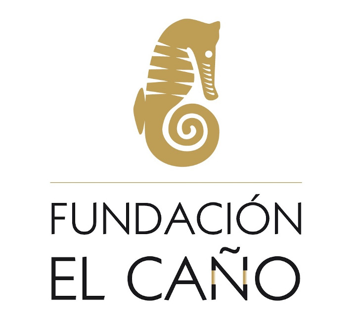
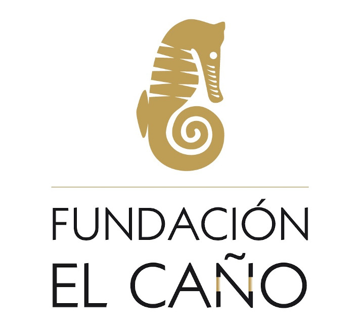

Une équipe multidisciplinaire avec une forte motivation culturelle et socio-scientifique qui travaille au bénéfice du Panama et de son patrimoine archéologique. Ils recherchent des fonds auprès d'organismes publics et privés nationaux et internationaux intéressés par l'engagement en faveur de la conservation et de l'étude du patrimoine archéologique du Panama.
Un groupe de quatre étudiants de l'Institut polytechnique de Worcester a conçu et créé cette application mobile autoguidée dans le cadre de leur projet de qualification interactive (IQP). Le projet de qualification interactive est l'un des éléments distinctifs du programme d'études de l'Institut polytechnique de Worcester basé sur des projets de premier plan, donnant à chaque étudiant du WPI l'expérience de travailler en équipes interdisciplinaires pour résoudre un problème ou un besoin qui se situe à l'intersection de la science et de la société.
Un groupe qui organise et cherche du financement pour les efforts de la communauté locale. Il peut s'agir de projets de construction, d'occasions et d'événements éducatifs qui font participer la collectivité à l'environnement, aux enfants, aux cultures, à la santé et à l'éducation. FPP sert de point de contact pour les organisations étudiantes basées aux Etats-Unis qui souhaitent travailler au Panama.


 
